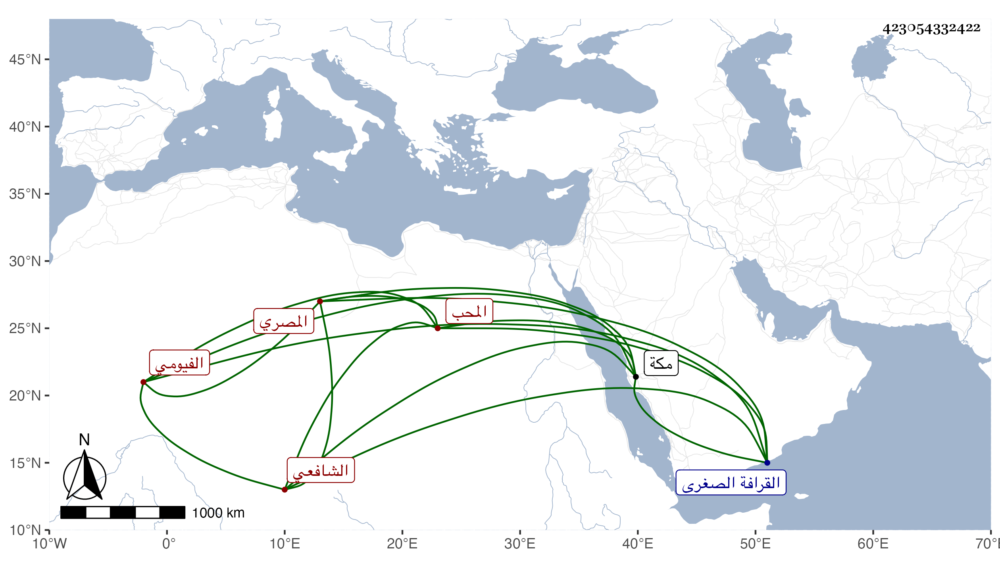

0902Sakhawi.DawLamic.ITO20230111-ara1.EIS1600.423054332422
Biography ID: 423054332422
1034
محمد بن أحمد بن سنجر بن عطاء الله المحب الفيومي ثم المصري الشافعي ويعرف بالفيومي . كتب بخطه الكتب الستة وغيرها وقرأ الحديث بالجامع العمروي على العامة معتقدا بين العامة والخاصة ، سمعت المناوي وغيره يثنى عليه وكان يعجبني سمته وهديه وقد حج بأخرة بعد أن باع الكتب الستة التي انتسخها برسمه وأظنها صارت لرباط ابن الزمن بمكة فقد رأيت عدة منها فيه ومات في صفر سنة ثلاث وسبعين بعد توعكه أسبوعا انقطع لأجله عن الجامع المذكور وصلى عليه ودفن بتربة البهاء بن حنا جوار مسلم السلمي بن الفيومي من القرافة الصغرى وكان مشهده حافلا رحمه الله ونفعنا به .
